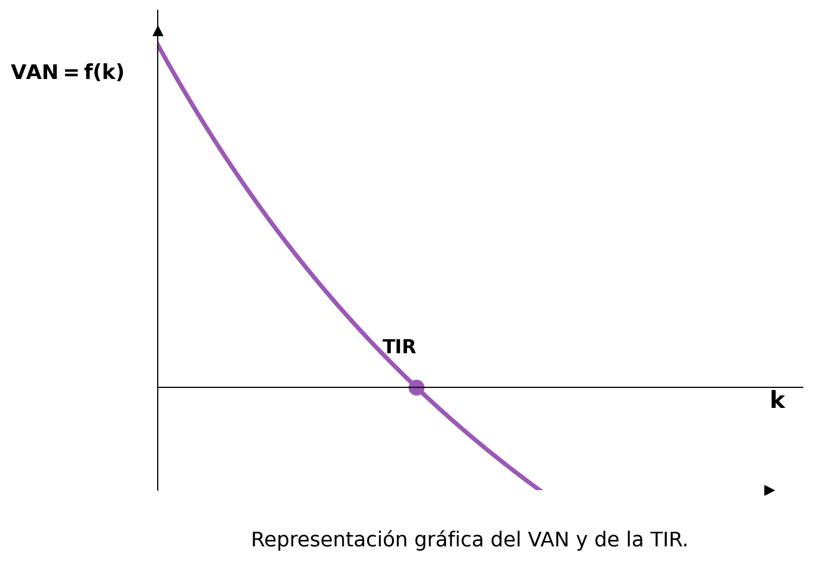

4 Inversión y financiación
Desde el punto de vista patrimonial, las empresas poseen estructura económica y financiera. Disponen de una masa patrimonial compuesta por elementos económicos denominados activos (bienes y derechos), que son financiados mediante elementos pasivos (deudas y obligaciones).
4.1 Inversión: conceptos y tipos
Una inversión es aquel acto en el cual una empresa renuncia a una satisfacción inmediata y cierta por la esperanza de obtener una mayor rentabilidad en el futuro.
Para adquirir activos las empresas tienen que invertir. Esto supone renunciar a dinero a cambio de obtener dichos activos con la esperanza de obtener rentabilidad en el futuro.
Existe un mercado de capitales que redirige ahorros de los diversos agentes económicos a inversiones en empresas.
Tipos de activos en los que se puede invertir:
- Activos reales o productivos: engloban todos los bienes destinados a la producción (no a su consumo directo). Por ejemplo, la maquinaria.
- Activos financieros: acciones, bonos y otro tipo de instrumentos financieros.
Según la relación entre inversiones:
- Sustitutivas: la realización de una hace innecesaria o imposible la otra.
- Complementarias: la realización de una facilita o potencia la otra.
- Independientes: la realización de una no afecta a las demás.
A la hora de valorar una inversión, existen tres características a analizar:
- Rentabilidad: el beneficio en relación al monto invertido. Se expresa como un porcentaje.
- Riesgo: hay inversiones seguras, pero otras sufren una gran volatilidad, por lo que a la hora de invertir no puede saberse con certeza cuál será el resultado.
- Liquidez: la cualidad de los activos para ser convertidos en dinero efectivo de forma inmediata sin pérdida significativa de su valor.
4.2 Características y valoración de una inversión
Al invertir, se hace un pago —el desembolso inicial (\(D_0\))— con la esperanza de generar unas entradas y salidas de dinero, llamados flujos netos de caja o cash flows, a lo largo de \(n\) años (duración temporal). Al final de la inversión, puede que el bien aún tenga algún valor en el mercado, denominado valor residual.
El dinero no tiene siempre el mismo valor: varía con el tiempo según la inflación. Por eso no se pueden comparar los euros actuales con los del año 2000. Al darse los flujos de caja en distintos momentos, para saber si se ganará dinero habrá que llevar todos los flujos de caja a valores actuales, actualizarlos para saber a cuánto dinero de hoy equivaldrían.
- Sin tener en cuenta ese dinamismo, la valoración es estática.
- Al tenerlo en cuenta, la valoración es dinámica.
4.2.1 Criterio estático: el pay-back (plazo de recuperación)
A la hora de valorar una inversión, lo más simple es considerar que el valor del dinero es constante. Cuando no hay medios para hacer un cálculo más complejo, puede recurrirse al criterio del plazo de recuperación o pay-back. Este criterio estático muestra el tiempo necesario para recuperar el monto desembolsado. El foco está, por tanto, en la liquidez de la inversión.
Para calcularlo hay que organizar una línea temporal, restando el desembolso inicial y sumando año a año los ingresos generados, hasta superar el 0. Superar el cero significará que en ese momento (\(T\)) se habrá recuperado el dinero desembolsado. La inversión seleccionada será aquella en la que el dinero logre recuperarse; si hay varias, se seleccionará aquella que permita recuperar la inversión antes (el menor \(T\) posible).
4.2.2 Métodos dinámicos
Si se cuenta con los medios necesarios, lo ideal es tener en cuenta el momento en el que se producen los flujos de caja. Los métodos que lo hacen se denominan métodos dinámicos.
4.2.2.1 Valor Actual Neto (VAN)
El método más simple es calcular el Valor Actual Neto (VAN):
\[ VAN = \sum_{t=1}^{n} \frac{V_t}{(1+k)^t} - I_0 \]
Donde:
- \(V_t\) representa los flujos de caja en cada periodo \(t\).
- \(I_0\) es el valor del desembolso inicial de la inversión.
- \(n\) es el número de períodos considerado.
- \(k\) es el tipo de interés (coste del capital o rentabilidad mínima exigida).
El VAN consiste en llevar al momento actual (momento 0) todos los flujos de caja. Por la equivalencia financiera, los capitales son comparables cuando están todos en el mismo punto de la línea temporal.
Nota¿Por qué no se pueden comparar euros de distintos momentos?
Imagina que tienes dos opciones:
- Ahorrar 100 €: si los guardas en un depósito al 10 % anual, después de un año tendrás 110 €.
- Gastar 100 € hoy: disfrutarás del bien ahora, pero no tendrás ese dinero más tarde.
La equivalencia financiera de los capitales significa que el dinero que tienes hoy puede crecer si lo ahorras. Por eso 100 € hoy no son comparables directamente con 100 € dentro de un año: los primeros valen más.
En inversiones empresariales, se calcula un interés \(k\) que es el mínimo que hay que ganar para que la inversión compense (si no, habría alternativas mejores, como un depósito bancario). Para que un proyecto merezca la pena, el VAN tiene que ser positivo o al menos nulo.
¿Cómo elegir entre proyectos según el VAN?
| Resultado del VAN | Interpretación |
|---|---|
| \(VAN > 0\) | El proyecto es rentable: el valor actualizado de las entradas supera el desembolso inicial. |
| \(VAN < 0\) | El proyecto no es rentable: no se recupera el dinero invertido. No debe llevarse a cabo. |
| \(VAN = 0\) | El valor actualizado de las entradas es igual al desembolso inicial. El proyecto es indiferente. |
Entre los proyectos con VAN nulo o positivo, hay que seleccionar aquel que tenga el mayor VAN.
4.2.2.2 Tasa Interna de Rentabilidad (TIR)
El VAN da una medida absoluta de la rentabilidad. Para comparar adecuadamente inversiones de distinto tamaño puede utilizarse la Tasa Interna de Rentabilidad (TIR).
La TIR es la tasa de actualización \(k\) que hace que el VAN sea igual a cero:
\[ VAN = 0 = -A + \frac{FNC_1}{(1+TIR)^1} + \frac{FNC_2}{(1+TIR)^2} + \frac{FNC_3}{(1+TIR)^3} + \cdots + \frac{FNC_n}{(1+TIR)^n} \]
La TIR mide la rentabilidad relativa de la inversión (cuánto se obtiene por cada euro invertido), expresada en porcentaje. Permite saber si una inversión es más rentable que otra aunque tenga un VAN absoluto mayor pero también una mayor inversión inicial.
| Comparación | Interpretación |
|---|---|
| \(TIR > k\) | La rentabilidad es superior al interés exigido; el VAN será positivo. |
| \(TIR < k\) | La inversión no es rentable; destruye valor. |
| \(TIR = k\) | La inversión es indiferente. |
Se elige, de entre todos los proyectos con TIR positiva, el que tenga el valor más elevado.
4.2.3 Comparativa de los tres métodos
| Método | Mide | Enfoque |
|---|---|---|
| Pay-back | Velocidad de recuperación | Liquidez |
| VAN | Beneficio total actualizado | Rentabilidad absoluta |
| TIR | Rentabilidad por euro invertido | Rentabilidad relativa |
Los tres métodos son complementarios: el pay-back mide la liquidez del proyecto; el VAN mide la rentabilidad absoluta; la TIR mide la rentabilidad relativa.
4.3 Período Medio de Maduración (PMM)
El Período Medio de Maduración Financiero (PMMF) mide el tiempo que transcurre desde que la empresa paga a sus proveedores por las materias primas hasta que cobra a sus clientes por la venta de los productos.
\[ PMMF = PMA + PMF + PMV + PMC - PMP \]
O, de forma equivalente:
\[ PMMF = PMME - PMP \]
Donde:
- PMA: Período Medio de Almacenamiento de materias primas.
- PMF: Período Medio de Fabricación.
- PMV: Período Medio de Ventas (productos terminados en almacén).
- PMC: Período Medio de Cobro a clientes.
- PMP: Período Medio de Pago a proveedores (se resta porque es financiación gratuita que retrasa la necesidad de tesorería).
- PMME: Período Medio de Maduración Económico (suma de los cuatro primeros).
Nota
Cuanto menor sea el PMMF, menor será la necesidad de financiación del ciclo de explotación (fondo de maniobra). Las empresas buscan reducirlo acortando el ciclo productivo, gestionando mejor el stock y cobrando antes a clientes.
4.4 La función financiera de la empresa
Las empresas requieren inversiones (como la compra de naves y máquinas) para llevar a cabo su actividad productiva. Para financiar estas inversiones y cubrir gastos corrientes (salarios, suministros, etc.), necesitan obtener recursos financieros. El departamento financiero tiene dos funciones principales:
- Identificación de inversiones y gastos: determinar todas las inversiones y gastos necesarios, con el objetivo de lograr una rentabilidad adecuada.
- Selección de fuentes de financiación: elegir los fondos suficientes al menor coste posible.
4.4.1 Estructura económica y financiera
La relación entre inversiones y financiación se representa a través de la estructura económica (inversiones = activo) y la estructura financiera (pasivo y patrimonio neto).
Al elegir fuentes de financiación, deben considerarse varios factores:
- Coste: algunas fuentes son más caras (p. ej., préstamos a largo plazo implican más intereses).
- Cantidad necesaria: las opciones de financiación varían según la cantidad de fondos requeridos.
- Flexibilidad: algunas fuentes permiten aplazar pagos, lo que puede beneficiar a la empresa.
- Tamaño de la empresa: las empresas grandes suelen tener más opciones de financiación.
- Equilibrio financiero: debe existir una relación adecuada entre inversiones y fuentes de financiación. Por ejemplo, no es sensato pedir un préstamo a largo plazo para financiar activos de corta duración.
4.5 Fuentes de financiación
Las fuentes de financiación se clasifican según tres criterios:
4.5.1 Según su titularidad
- Fondos propios: recursos que pertenecen a la empresa y no necesitan ser devueltos. Incluyen aportaciones de socios (capital), beneficios no distribuidos (reservas) y amortizaciones y provisiones.
- Fondos ajenos: recursos que se piden prestados y deben devolverse con intereses. Se dividen en:
- A largo plazo: devolución en más de un año (pasivo no corriente).
- A corto plazo: devolución en menos de un año (pasivo corriente). Los intereses se consideran gastos financieros.
4.5.2 Según su origen
- Financiación interna: recursos generados por la propia empresa (reservas, amortizaciones y provisiones).
- Financiación externa: recursos obtenidos del exterior (aportaciones de socios, emisión de obligaciones, otros tipos de financiación ajena).
4.5.3 Según su duración
- Capitales permanentes: fondos que permanecen en la empresa a largo plazo (autofinanciación + pasivo no corriente).
- Capitales a corto plazo: fondos que deben devolverse en menos de un año.
4.6 La financiación propia
4.6.1 Financiación propia externa
- Capital social: cantidad de dinero o bienes aportados por los socios para iniciar la actividad.
- Aportaciones iniciales de los socios: en una Sociedad Anónima se dividen en acciones; en otras sociedades, en participaciones.
- Ampliaciones de capital: si la empresa necesita más fondos, puede solicitar nuevas aportaciones, ofreciéndolas primero a los socios actuales.
- Subvenciones: ayudas otorgadas por las Administraciones Públicas, generalmente disponibles para pymes y emprendedores.
4.6.2 Financiación propia interna (autofinanciación)
Son los fondos generados por la propia actividad de la empresa:
- Reservas: beneficios no distribuidos. Pueden ser legales (fijadas por la ley), estatutarias (fijadas por los estatutos) o voluntarias.
- Amortizaciones: reflejan la pérdida de valor de los activos productivos a lo largo del tiempo. Por ejemplo, un coche comprado por 20.000 € con vida útil de 10 años se amortiza a razón de 2.000 € anuales. Este monto se contabiliza como coste, pero en realidad se “ahorra” para futuras inversiones.
- Provisiones: cantidades reservadas para cubrir gastos futuros inciertos (p. ej., una reparación prevista en la fábrica).
4.7 La financiación ajena
4.7.1 Financiación ajena a largo plazo
Cuando los fondos propios no son suficientes, las empresas recurren a financiación ajena a largo plazo (devolución en más de un año):
- Préstamos a largo plazo: fondos obtenidos con devolución e intereses pactados a más de un año.
- Empréstitos: emisión de bonos u obligaciones que particulares o empresas compran, prestando dinero a la empresa a cambio de intereses.
- Leasing: contrato de arrendamiento con opción a compra. Una entidad de leasing compra el bien y lo cede a la empresa a cambio de una cuota periódica. Al finalizar el contrato, la empresa puede comprar el bien a precio reducido, renovar el contrato o devolverlo. El mantenimiento y el seguro no están incluidos, y el coste total suele ser elevado.
- Renting: contrato de alquiler a largo plazo con cuota fija que incluye mantenimiento y seguro. A diferencia del leasing, no existe opción de compra al finalizar el contrato.
4.7.2 Financiación ajena a corto plazo
Pedir financiación a largo plazo suele ser más costoso debido a los intereses más altos. Cuando la empresa necesita dinero para cubrir necesidades puntuales y puede devolverlo rápidamente, recurre a financiación a corto plazo:
- Préstamos a corto plazo: préstamos bancarios con plazo de devolución inferior a un año.
- Líneas de crédito: el banco habilita una cuenta con un límite determinado y la empresa retira fondos según lo necesite. Se pagan intereses por la cantidad utilizada y comisión por el monto no dispuesto.
- Crédito comercial: los proveedores permiten aplazar el pago de materias primas (normalmente entre 45 y 90 días). Es una forma de financiación gratuita, salvo que el proveedor ofrezca descuento por pago anticipado.
- Descuento de efectos: el banco anticipa el importe de un efecto comercial (pagaré, cheque) antes de su vencimiento, descontando un interés. El banco asume el riesgo de impago.
- Factoring: la empresa vende sus derechos de cobro a una entidad (“factor”), que adelanta el dinero con un descuento que cubre intereses y riesgo de impago. Permite trasladar el riesgo al factor, aunque el coste es elevado.
- Confirming: servicio bancario que facilita la gestión de pagos a proveedores. El banco informa al proveedor sobre el pago pendiente y le ofrece cobrarlo antes del vencimiento a cambio de intereses.
- Fuentes espontáneas de financiación: formas de financiación que se obtienen sin negociación previa:
- Descubierto en cuenta: la empresa gasta más de lo disponible en cuenta; los intereses aplicados suelen ser muy altos.
- Salarios pendientes de pago: los empleados cobran a fin de mes, por lo que la empresa dispone temporalmente de esos fondos.
- Pagos a Hacienda: la empresa dispone de los fondos fiscales hasta la fecha de pago.
4.8 Fuentes alternativas de financiación
Las fuentes alternativas han cobrado gran relevancia especialmente para las pymes. Las principales son:
- Capital riesgo (venture capital): entidades que invierten en empresas con alto potencial de crecimiento a cambio de una participación. Su objetivo es obtener beneficios al vender su participación cuando la empresa haya prosperado.
- Business angels: inversores individuales con experiencia y contactos que proporcionan capital a startups en etapas iniciales a cambio de una participación.
- Crowdfunding: recaudación de fondos a través de pequeñas aportaciones de muchas personas. Los contribuyentes reciben contraprestaciones como participaciones o recompensas.
- Crowdlending: similar al crowdfunding, pero en forma de préstamos otorgados por múltiples particulares que esperan recibir intereses. Las tasas suelen ser más bajas que las bancarias.
- Friends, Family and Fools (FFF): financiamiento en el círculo cercano (familiares, amigos y personas que confían en el proyecto).
- Aceleradoras de startups: apoyan a nuevas empresas en sus primeras etapas ofreciendo inversión, redes de contactos, formación y asesoramiento.
- Capitalización de la prestación de desempleo: la Seguridad Social permite a los desempleados recibir el total de su prestación de una sola vez para iniciar un negocio.